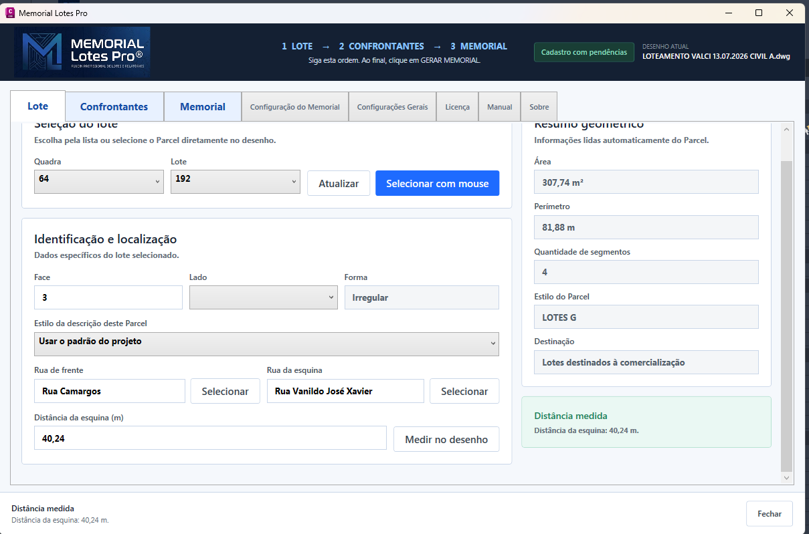
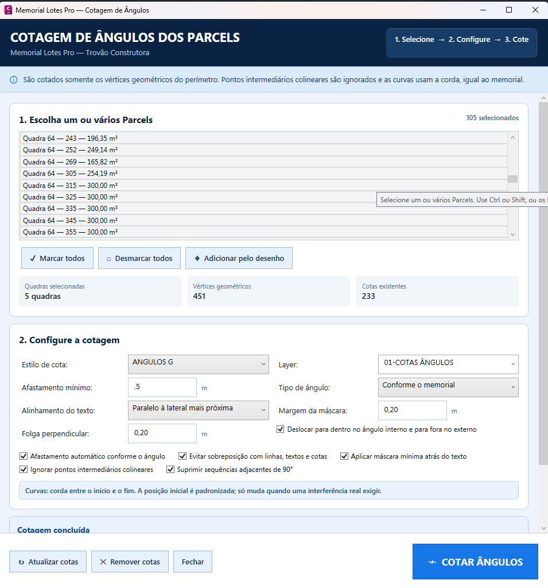
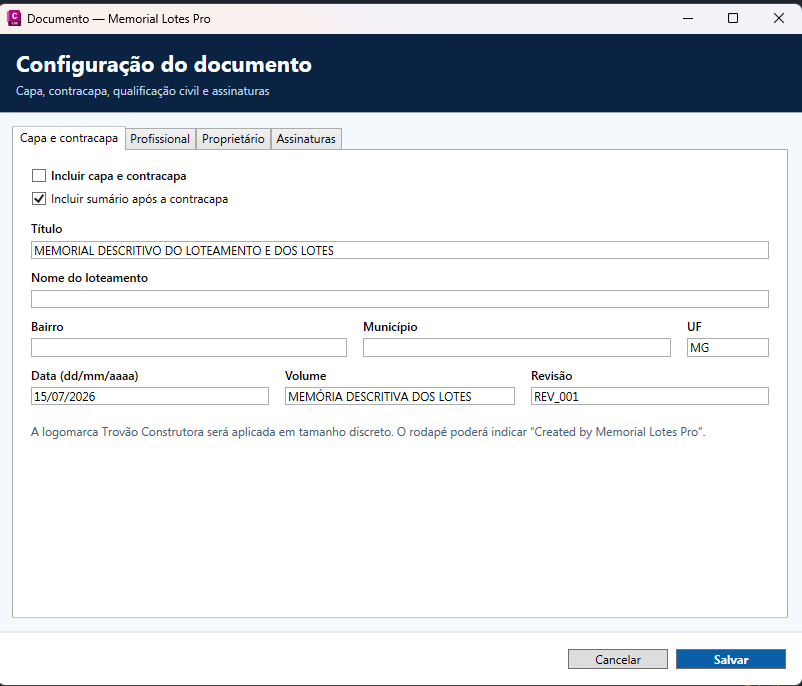

1. Engine de Extração de Dados
Integração total com o ambiente Autodesk Civil 3D. O módulo de Lote extrai automaticamente a topologia do Parcel (área, perímetro, segmentos) em tempo real, eliminando a dependência de labels nativos do CAD.
2. Algoritmo de Identificação de Confrontantes
Processamento espacial inteligente que identifica vizinhança e logradouros automaticamente. Transforma relações espaciais complexas em texto técnico descritivo, garantindo fidelidade absoluta na confrontação.


3. Motor de Cotagem Paramétrica
Diferencial técnico: Algoritmo de cotagem com gestão de máscaras e offset inteligente. Resolve a falta de ferramentas nativas no Civil 3D para ângulos internos, entregando pranchas de alta legibilidade técnica.
4. Módulo de Normatização e Georreferenciamento
Configuração de precisão cartográfica. Suporte completo a Datum (SIRGAS 2000), Fusos UTM e parametrização entre modelos de memória descritiva (Urbano vs. Rural) e descrição angular (Azimutes ou Ângulos Internos).


5. Protocolo de Finalização Documental
Automação da estrutura documental final. O software gerencia a parametrização de Capa, Sumário e Assinaturas, entregando um relatório técnico formatado e pronto para submissão digital.